I found a collage showreel on Behance that looked like someone animated a scrapbook — torn-paper waves, vintage engravings, a boat folded out of dollar bills. Studios charge real money for this style. I rebuilt it in an evening with prompts.
Everything below is the exact workflow — every asset AI-generated, every animation coded by Claude Code, every sound generated on demand.
01Start from the $1,000 original
Found this interesting motion graphic on Behance — professional designers usually charge $1,000 for something like this.
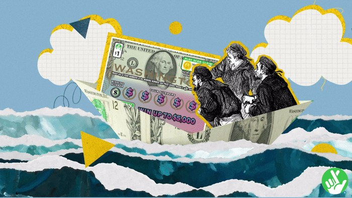
- Fed the source to Claude Code to analyze frame by frame and produce a master sheet of every asset the scene needs.
- That master sheet became the shopping list for the whole build — every cutout and layer in one table below.
The master asset sheet
Every image in the film, where it came from, and the prompt essence that made it.
| Asset | Piece | In the scene | Source | Prompt essence / notes |
|---|---|---|---|---|
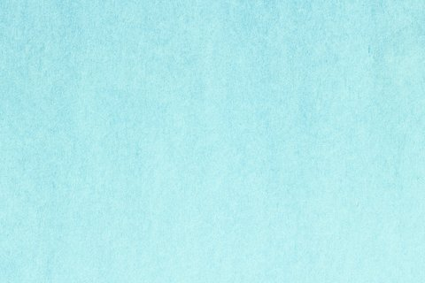 | Kraft paper sky | Full-frame background | My file | Blue kraft paper texture from my own asset folder |
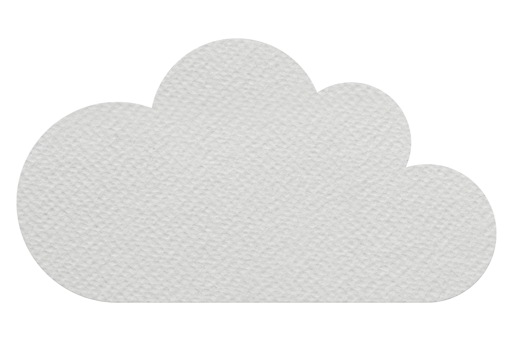 | Paper cloud | Sky, used twice (one mirrored) | My file | Yellow offset shadow added in code, not in the image |
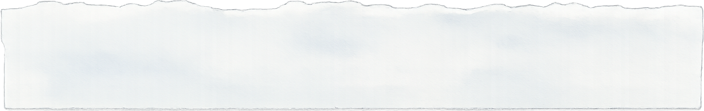 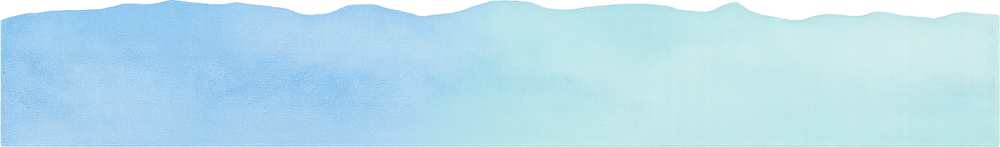 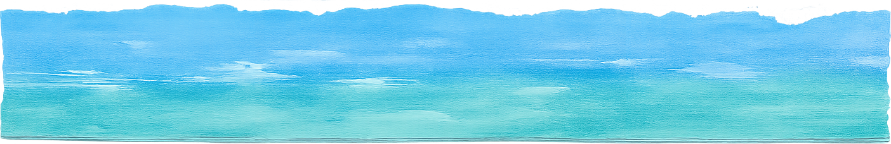 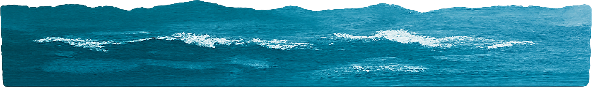 | Ocean strips ×4 | Wave layers 1–4, back to front | Generated | "Thin horizontal strip of torn paper, watercolor wash, ragged torn top edge with white paper fibers" — one prompt, four shades from near-white to teal |
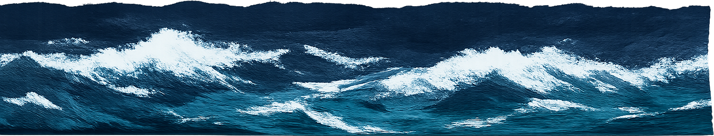 | Storm wave | Wave layer 5, frontmost | Generated | Dark navy gouache with white crests — kept from the first draft because it was the best one |
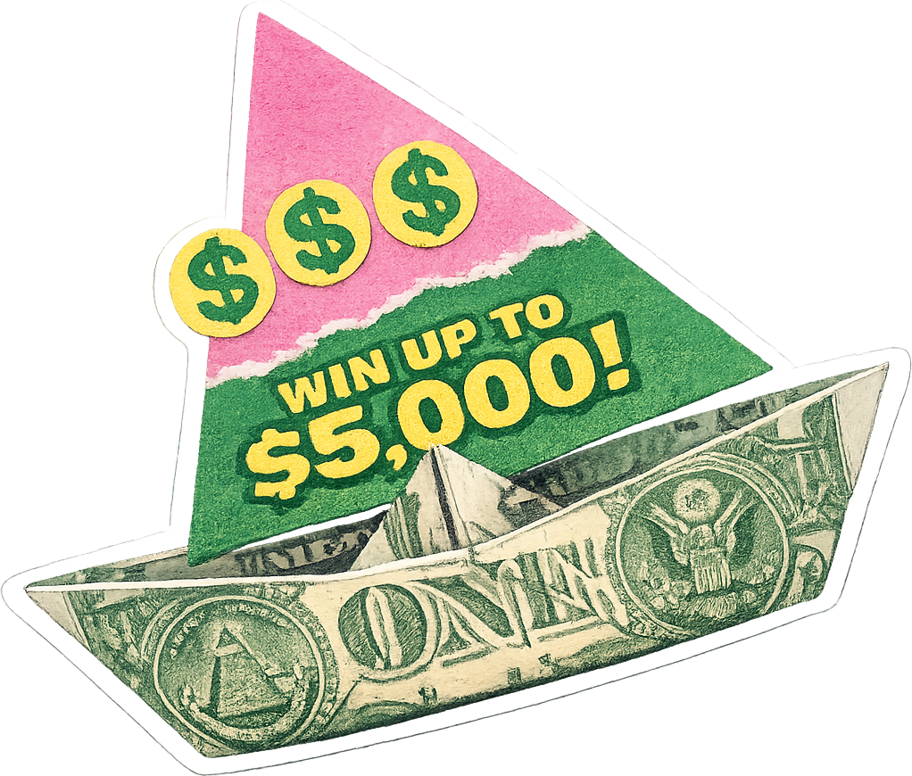 | Dollar-bill boat | The hero | Generated | "Paper boat folded from dollar bills, lottery-ticket sail, thin white sticker border" — high quality setting |
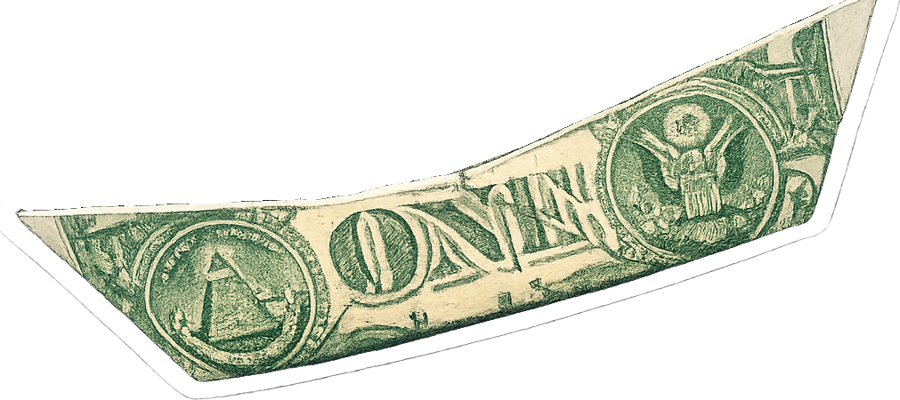 | Front hull wall | The sandwich layer | Derived | Cut from the boat image along the white fold line — same pixels, invisible seam |
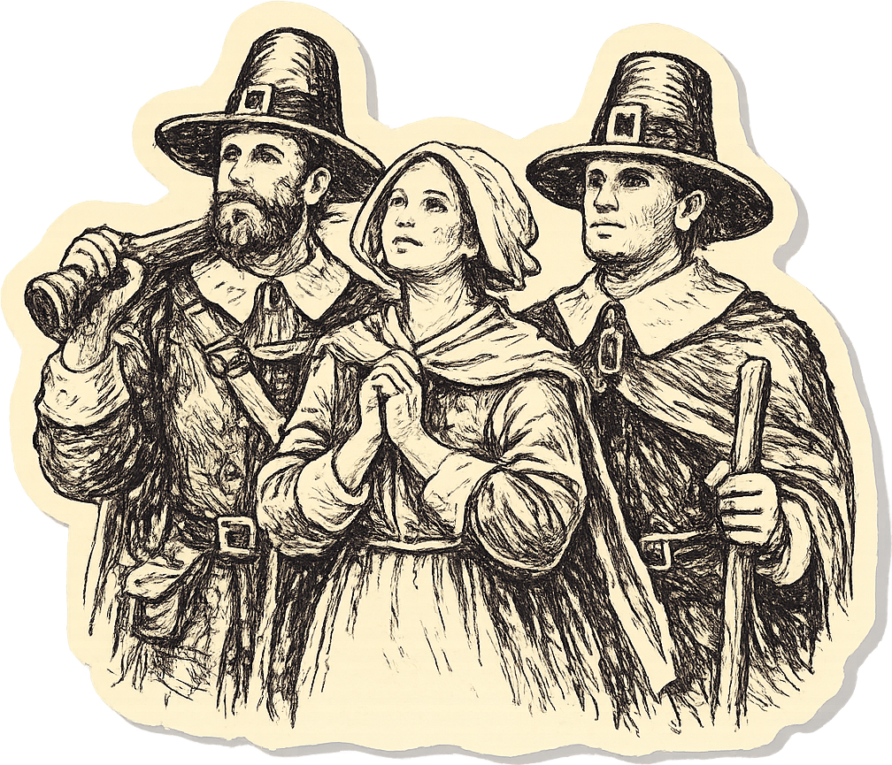 | Pilgrims | Passengers | Generated | Redrawn from a vintage engraving, using the lighthouse as a style reference so both read as one artist's ink |
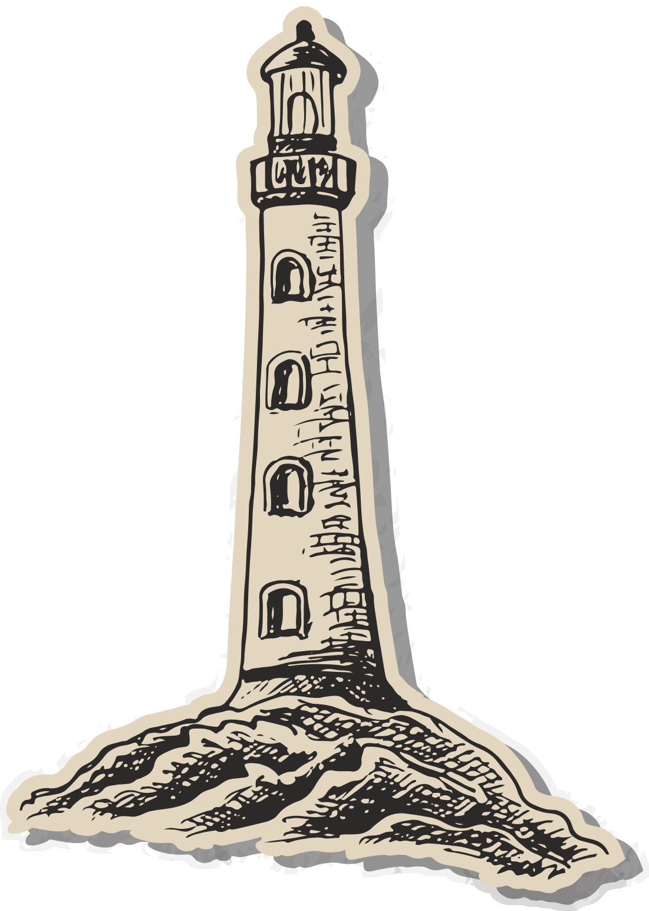 | Lighthouse | Left set piece | My file | Blue clip-art SVG — recolored to ink and isolated from a sheet of nautical doodles |
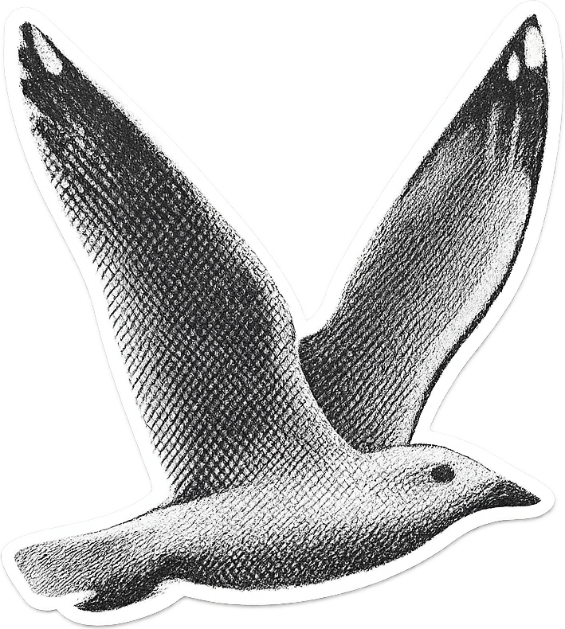 | Halftone seagull | Sky | Generated | "Vintage newspaper halftone photo of a flying gull, visible dot pattern, white border" |
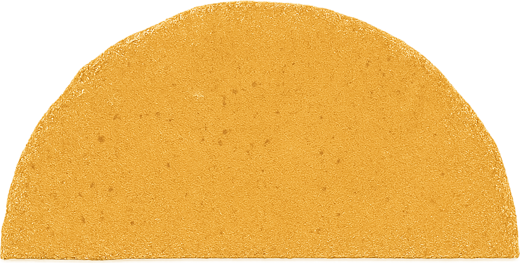 | Craft-paper sun | Rises on the horizon | Generated | Mustard half-circle with visible paper grain and torn edges |
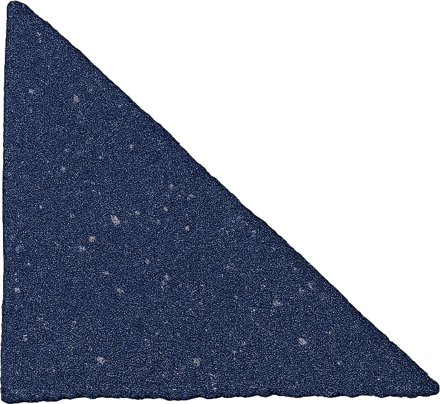 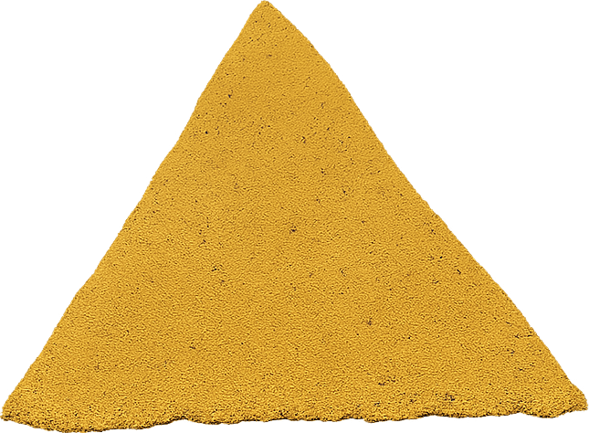 | Triangles ×2 | Confetti accents | Generated | Navy + yellow craft paper, rough cut edges |
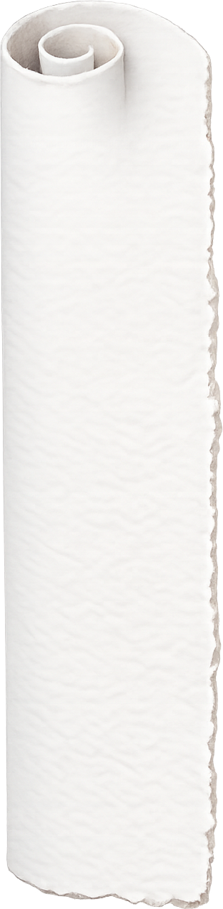 | Paper scroll roll | Curtain edges (one mirrored) | Generated | "Rolled edge of a paper scroll with a spiral curl at the top" |
Generated = GPT Image 1.5 via the Replicate API · My file = assets I already had · Derived = cut from another asset in code.
02Storyboard the five beats
One page, five beats, signed off before a single asset was generated:
- Beat 1 — Closed scroll. A rolled paper scroll stands on a kraft-blue sky, clouds bobbing.
- Beat 2 — Unfolding. The rolls part like curtains; a five-layer ocean unfurls between them.
- Beat 3 — Reveal. Rolls exit, ocean spans the frame, sun peeks through the layers.
- Beat 4 — Boat sails in. The dollar-bill boat enters from the right; the seagull glides in from the left.
- Beat 5 — Living scene. Everything loops: parallax waves, rocking boat, drifting clouds.
- Why storyboard first: every note we caught here (a second cloud, unfold direction) cost seconds to change — the same notes after the build would cost hours.
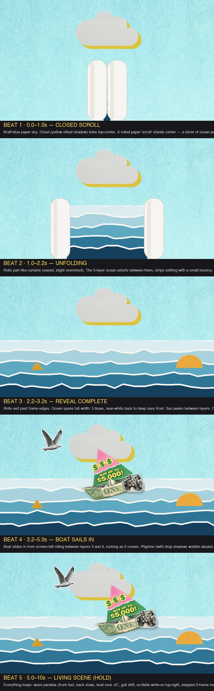
03Generate the torn-paper pieces
Every visual is a transparent PNG generated by GPT Image on Replicate — with the collage treatment baked in:
- The trick is in the prompt: ask for "torn ragged top edge with visible white paper fibers" and "thin white sticker border" so the pieces arrive pre-cut — zero postprocessing.
- The pack: five ocean strips in a gradient (near-white → deep navy), the dollar-bill boat with a lottery-ticket sail, a halftone seagull, craft-paper sun and triangles, a rolled paper scroll edge.
- Style-matching: the pilgrims were regenerated using the lighthouse drawing as a style reference, so both read as the same artist's ink.
- Iteration is one line: every prompt lives in a script, so regenerating any single piece is one command.
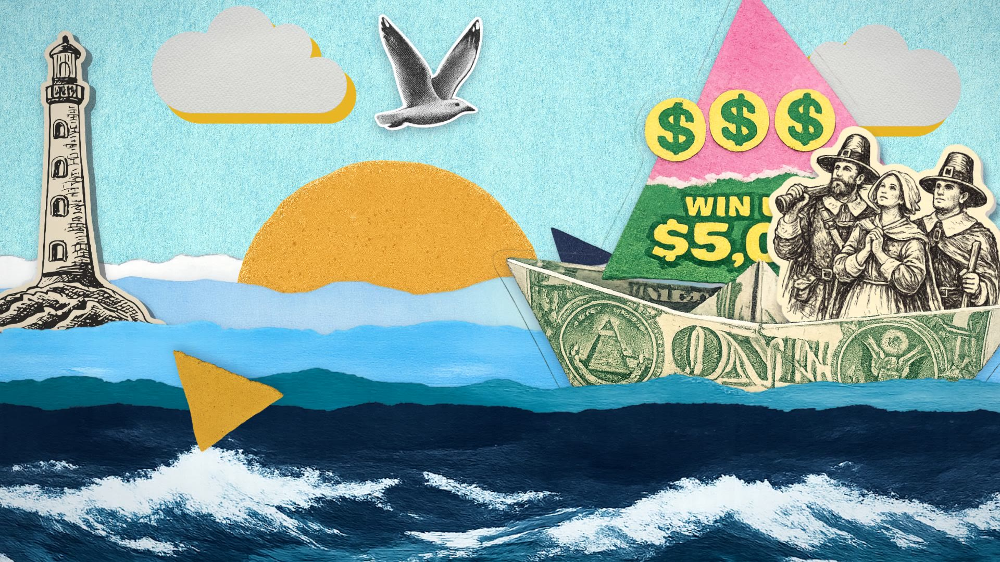
04Assemble and animate in Remotion
The scene is code — which means every choice is a number I can change forever:
- Layer stack: kraft-paper sky → clouds → five ocean strips back-to-front → boat between layers 3 and 4 → sun and lighthouse slotted at their own depths.
- The unfold: the ocean hides behind a widening gap between two paper-roll cutouts — a curtain reveal, all masked in code.
- The motion: each wave strip drifts on its own loop (front fast, back slow), the boat rocks around a pivot near the waterline, passengers wobble slightly out of phase — loose paper joints.
- The hand-made feel: character motion holds each pose for 2–3 frames in an uneven pattern. Even holds read as "low frame rate"; uneven holds read as "a human placed every frame."
- Full prop control: every piece got its own control panel in Remotion Studio — drag a number, watch it live, save it back into the code.
Teaching moment: posterized time
That hand-made choppiness has a name — posterized time (After Effects users know it as the Posterize Time effect). Instead of updating a movement every frame, you hold each pose for several frames, so 24fps footage moves like 12fps or 8fps stop-motion while the video itself stays smooth. Try it — this boat is animating live:
Compositions
- CollageBoatV2
- CollageBoat
Props · boat
05Sandwich the pilgrims into the boat
The pilgrims looked stuck onto the boat instead of riding in it. The fix is an old cel-animation trick:
- Split the boat into two layers: the full boat behind, and just the near hull wall in front.
- Cut from the same image: the front wall is cut out of the original boat PNG along the white fold line — same pixels, so the seam is literally invisible.
- Trace, don't eyeball: the fold line was found by scanning the image column by column for the white stripe — the first hand-drawn cut missed, the traced one landed exactly.
- The payoff: pilgrims slot between the two layers, and because they keep their own wobble, they bob up and down behind the gunwale like real passengers.
06Score it and add foley
Sound is half the charm — and all of it was generated too:
- Music: a jaunty nautical folk waltz — accordion and fiddle in a 6/8 sway that matches the boat's rocking. Generated with Lyria 2, picked from two takes.
- Foley via ElevenLabs: a crisp paper rustle as the scroll unrolls, a soft water-lap bed under the whole scene, one distant gull cry as the seagull glides in.
- Less is more: a pencil-scratch sound synced to the scribble looked great on paper and was distracting in practice — cut. Ten seconds can't carry five sounds.
- Everything mixes in code: each sound is a layer with its own volume and trigger frame, tunable in the same props panel as the visuals.
The whole thing in one line
Decode the reference frame by frame → storyboard five beats → generate every cutout with torn edges baked in → assemble as code layers with loopy math and live sliders → sandwich characters between split cutouts → score with generated waltz + three foley cues.
Takeaways
- Bake the style into the prompt. "Torn edges, white sticker border, transparent background" means the asset arrives finished — the generator is your scissors.
- Storyboard with real assets. A board built from the actual pieces gets honest sign-off; notes cost seconds instead of hours.
- This style wants to be code. Collage animation is loops all the way down — one line of math per motion beats hundreds of keyframes.
- Split cutouts make depth. Any "character inside a thing" shot is just the same image twice with the character in between.
- Uneven beats even. Perfectly regular stepped motion reads as lag; irregular holds read as handmade.
- Cut the fifth sound. Ten seconds carries a music bed and three foley cues — the fourth cue was already one too many.